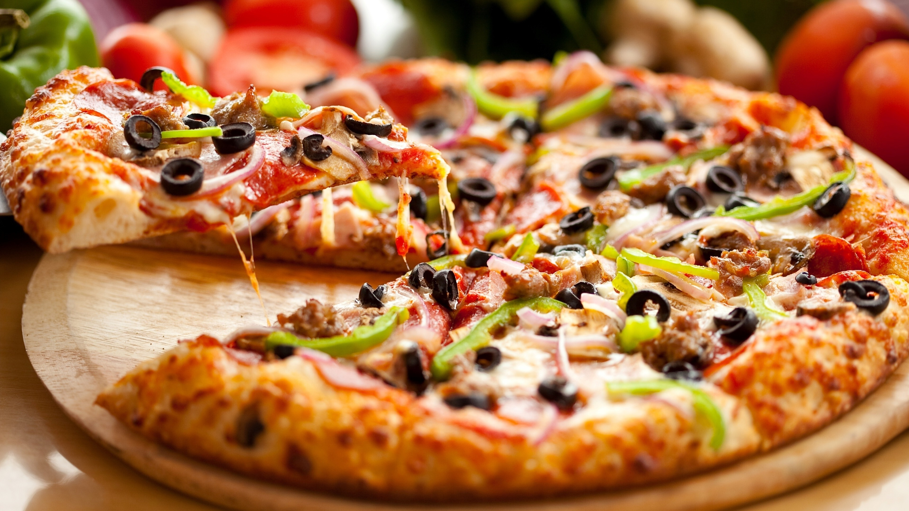

THE MOST DELICOUS MENU
PIZZA $10
Pizza is a dish of Italian origin consisting of a usually round, flat base of leavened wheat-based dough topped with tomatoes, cheese, and often various other ingredients, which is then baked at a high temperature, traditionally in a wood-fired oven.
Berger $10
A hamburger or simply burger is a food consisting of fillings—usually a patty of ground meat, typically beef—placed inside a sliced bun or bread rol
Biryani $10
Biryani is a mixed rice dish most popular in South Asia. It is made with rice, some type of meat and spices. To cater to vegetarians, in some cases, it is prepared by substituting vegetables for the meat. Sometimes eggs and/or potatoes are added
DAAL BAATI CHURMA $10
Daal Baati is an Indian dish of daal and baati. It is popular in Rajasthan, Madhya Pradesh, Maharashtra's Khandesh and Vidarbha region, Gujarat, and Uttar Pradesh. Daal is prepared using tuvaar dal, chana daal, mung dal, moth dal, or urad dal
DOSA $10
A dosa is a thin savory crepe in South Indian cuisine made from a fermented batter of ground black gram and rice. Dosas are served hot, often with chutney and sambar. Dosas are popular in South Asia as well as around the world.